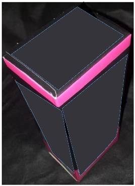
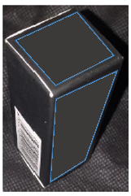
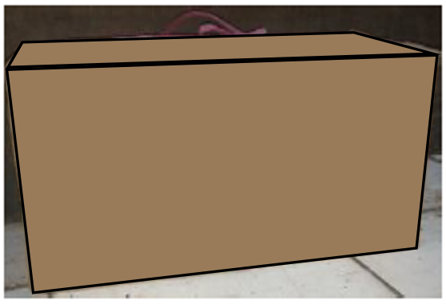

C. Volume Kubus dan Balok
Tujuan Pembelajaran:
- Setelah belajar mengenai volume balok siswa dapat menentukan volume balok dengan benar.
2. Volume Balok
Selanjutnya kita akan membahas tentang volume balok.
Tapi, tonton video 3 berikut. Video ini terlebih dahulu supaya kita bisa mengetahui
komponen-komponen dari bangun ruang balok.
Silahkan klik play untuk memulai. Klik icon
untuk memulai. Klik icon  untuk memperbesar video.
untuk memperbesar video.
Video 3. Komponen Balok
Setelah menonton videonya, ayo isi komponen balok yang ada di video tersebut pada tabel dibawah ini.
Tabel 3. Komponen Balok
| No. | Komponen | Banyaknya |
| 1. | Rusuk | |
| 2. | Sisi | |
| 3. | Titik Sudut | |
| 4. | Diagonal Sisi atau Diagonal Bidang |
|
| 5. | Diagonal Ruang | |
| 6. | Bidang Diagonal |
Apakah benda berikut berbentuk balok?

Gambar 8. Kotak Makanan

Gambar 9. Kotak Barang

Gambar 10. Lemari

Gambar 11. Kardus Wafer
 Sebelumnya
Sebelumnya